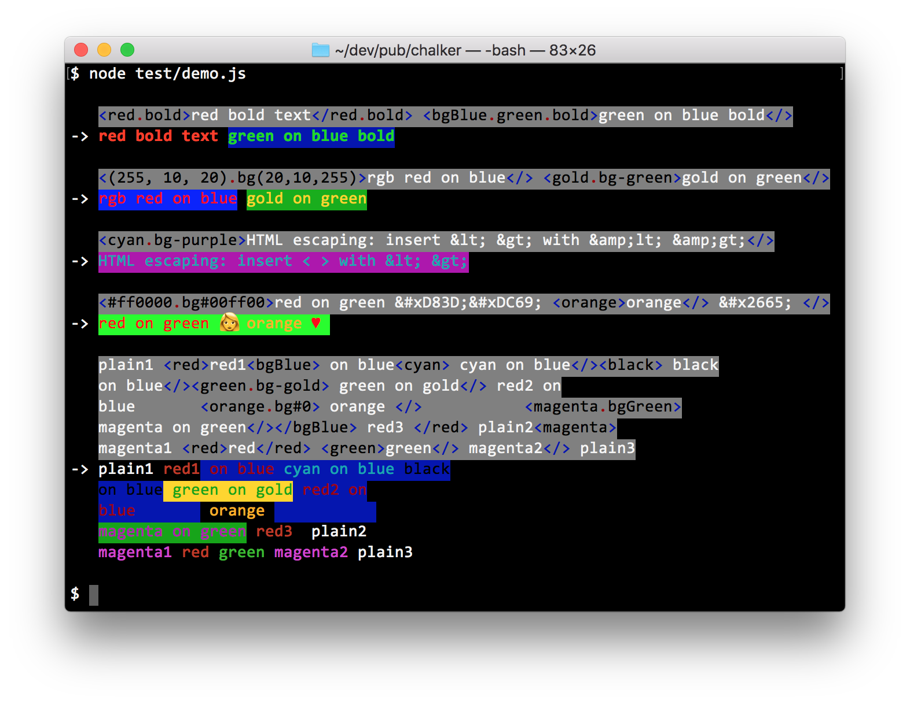

Module chalker
chalker


- API reference - TypeDoc
- Markdown reference - the full API and runtime behavior in one file. Also ships in the package.
- GitHub
Set ansi colors in strings using <> markers. Colors come from Node's built-in util.styleText, chalk, or ansi-colors.
Usage
import chalker from "chalker";
console.log(chalker("<red.bgGreen>Red on Green Text</>"));
// with template string tagging
console.log(chalker`<green>hello world</green>`);
A typical use case is to easily manage colors for logs that could go to console or log servers.
const msg = `<red>some error occurred...</red>`;
// log to console for visual with colors
if (!production) console.log(chalker(msg));
// log to log server with colors removed
logger.log(chalker.remove(msg));
Install
npm i --save chalker
chalker works without a colors library, using Node's built-in util.styleText. chalk >= 4 and ansi-colors >= 4 are optional peer dependencies. Pick where colors come from with the import path:
| import | colors from | needs |
|---|---|---|
chalker |
chalk if installed, else ansi-colors, else util.styleText |
nothing |
chalker/style-text |
Node's built-in util.styleText |
nothing |
chalker/chalk |
chalk | chalk >= 4 |
chalker/ansi-colors |
ansi-colors | ansi-colors >= 4 |
chalker finds the library at runtime with a top-level await. The other three import their library directly, so bundlers can resolve it and CommonJS can require() them.
With util.styleText, colors follow Node's own checks: they are off when stdout is not a terminal, and NO_COLOR and FORCE_COLOR apply. Two gaps: an rgb or hex outer color does not resume after a nested color closes, so in <#FF0000>a<blue>b</blue>c</> the c loses its color. And a color is not reopened after a line break, as chalk and ansi-colors do.
Demo

Marker Details
-
Color markers has the
<red>red text</red>format. You can use any valid methods chalk supports.- For example,
<blue.bold>blue bold text</blue.bold>will colorizeblue bold textwithchalk.blue.bold. - Closing marker can be simply
</>
- For example,
-
The following HTML entities escapes are supported:
Entity Character Entity Character << >> && non-breaking space '' ©© "" ®® -
HTML escape using code points also works:
- Hex -
&#xhhhh;wherehhhhis the Hex code point. - Decimal -
&#nnnn;wherennnnis the Decimal code point. - ie:
��makes 👩
- Hex -
Advanced Chalk Colors
Some advanced color markers use chalker compatibility wrappers when Chalk does not provide
the corresponding API directly.
Chalk advanced colors can be applied with:
| chalk API | chalker marker | chalk API | chalker marker |
|---|---|---|---|
chalk.rgb |
<(255, 10, 20)>, <rgb(255,10,20)> |
chalk.bgRgb |
<bg(255, 10, 20)>, <bgRgb(255,10,20)> |
chalk.hex |
<#FF0000>, <hex(#FF0000)> |
chalk.bgHex |
<bg#0000FF>, <bgHex(#0000FF)> |
chalk.keyword |
<orange>, <(orange)>, <keyword(orange)> |
chalk.bgKeyword |
<bg-orange>, <bg(orange)>, <bgKeyword(orange)> |
chalk.hsl |
<hsl(32,100,50)> |
chalk.bgHsl |
<bgHsl(32,100,50)> |
chalk.hsv |
<hsv(32,100,100)> |
chalk.bgHsv |
<bgHsv(32,100,100)> |
chalk.hwb |
<hwb(32,0,50)> |
chalk.bgHwb |
<bgHwb(32,0,50)> |
More details
-
a marker is tried with
chalk.keywordif:-
it's not detected as hex value
-
it doesn't contain params enclosed in
() -
it's not found as a basic color that
chalksupports -
for example, this is a chalk color keyword:
<orange> -
If it's prefixed with
"bg-"then it's tried usingchalk.bgKeyword- ie:
<bg-orange>
- ie:
-
-
All markers can be comined with
.in any order as long as they work with chalk- ie:
<#FF0000.bg#0000FF.bg-orange.keyword(red)>
- ie:
APIs
chalker
chalker(str, [chalkInstance]);
str- String with chalker color markerschalkInstance- Optional custom instance of chalk.- ie: created from
new chalk.Instance({level: 2})
- ie: created from
Returns: A string with terminal/ansi color codes
If
chalk.supportsColorisfalse, then markers are parsed the same way but no colors are applied. The output is the colored output minus the color codes, with HTML entities decoded. Chalk 5+ instances have nosupportsColor. Atlevel0, chalk itself emits no color codes.
chalker.CHALK
import ansiColors from "ansi-colors";
chalker.CHALK = ansiColors;
Set the default colors library. By default, chalker loads chalk first, then falls back to
ansi-colors, then to Node's built-in util.styleText.
With ansi-colors,
chalkerchanges the module object it uses. ansi-colors has no true-color support, sochalkeraddsrgb,bgRgb,hexandbgHexmethods to it. This happens on load:chalker/ansi-colorsalways does it, andchalkerdoes it when it falls back to ansi-colors. Each true-color marker, such as<#FF0000>or<orange>, also registers a style named likechalker_rgb_255_0_0throughcolors.alias().The default ansi-colors export is shared, so other code that imports ansi-colors sees these changes. Setting
chalker.CHALKto an instance fromcolors.create()keeps the new styles on that instance. The methods added on load stay on the shared module.
chalkeris published as an ESM-only package ("type": "module").require("chalker")fails withERR_REQUIRE_ASYNC_MODULEbecause of its top-level await. From CommonJS, useawait import("chalker"), orrequire()one of the other entries.require()of an ESM module returns its namespace object, so take.default:const chalker = require("chalker/style-text").default;
chalker.remove
chalker.remove(str, keepHtml);
str- String with chalker color markerskeepHtml- Iftrue, then don't decode HTML entity escapes.
Remove all chalker markers, then decode HTML escapes and return the plain text string. Whitespace is kept as is. Before 2.3.0, leading and trailing whitespace was trimmed.
Returns: A plain text string without chalker color markers
chalker.decodeHtml
chalker.decodeHtml(str);
str- String to decode HTML entities
Returns: String with HTML entities escapes decoded
License
Copyright (c) 2022-2026 Joel Chen
Licensed under the Apache License, Version 2.0.